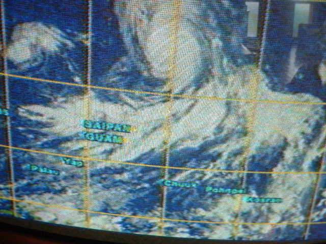
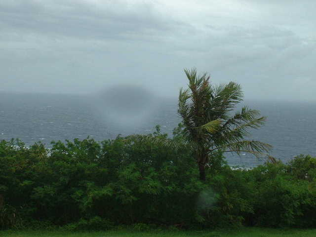

|
Flash ! DX
|
|
|
Flash ! DX
|
[Back Issues Jul.2002]
TIME:UTC(JST-09:00)
Report from JA1RJU (PM95sq)
31.Jul.2002(16:00e)
*BY-TV 00:00- 49.750 --
*VK-TV 06:40- 46.172/240 --
DS1CCU 08:30 50.120 CW
HL1LTC 09:00 50.110 SSB
VK4APE 09:05 50.110 SSB
VK4JH 09:24 50.110/120 SSB
DS1CCU 09:30 50.120 CW
VK4FNQ 09:35 50.110 SSB
VK8RAS 09:43- 50.047 CW Beacon
VK6JQ 10:13 50.110 CW
VK4APE 10:17 50.110 SSB evening
(8Q7ZZ 15:03- 50.110 CW JA3)
30.Jul.2002(15:00d)
*BY-TV 01:00- 49.750 --
*VK-TV 07:00- 46.172 --
VK4FNQ 07:18 50.110 SSB
*P5-AM 08:00- 48.250 --
*VK-TV 09:00- 46.172 --
29.Jul.2002(15:00c)
*BY-TV 01:00- 49.750 --
*VK-TV 08:00- 46.172 --
28.Jul.2002(15:00e)
*BY-TV 02:30- 49.750 --
VR2DXA 04:10 50.115 SSB
*VK-TV 04:40- 46.172/240 --
*VK-TV 07:20- 46.172/240 --
VK8MS 12:43 50.110 CW
| ◎ 7月中旬には2桁まで下降して、サイクル23の終焉を思わせていたSF(Solar flux)/SSN(sunspot number)値が、 ここのところ急に上昇している。7/26にSSN=319、7/27はSSN=323と再び300の大台を超えた。 SSNが300を超えたのは、2002年5/5にSSN=317を数えて以来となる。 この時期の上昇が即50MHz帯のDXの入感に結びつく訳ではないが、 日中に46MHz帯のVKのTVが強力に聞こえている時は、何となくコンデション上昇に期待を持たせる。 |
27.Jul.2002(15:00d) *BY-TV 00:00- 49.750 -- *VK-TV 05:20- 46.172 -- strong 26.Jul.2002(15:00c) *BY-TV 01:00- 49.750 -- *VK-TV 05:40- 46.172/240 -- *VK-TV 12:00- 46.172/240 -- evening 25.Jul.2002(15:00c) *BY-TV 09:00- 49.750 -- weak 24.Jul.2002(15:00d) *BY-TV 01:00- 49.750 -- *P5-AM 09:00- 48.250 --
|
◎ 設備(Rig/ANT)のメンテナンスのためレンタルシャックのあるサイパンのMarianas Resort Hotelを訪問した。
台風シーズンにはまだ早いこの時期、日本にも早々と上陸した台風は甚大な被害を与えたが、
台風の発生場所ともなっているGuam(KH2)やマリアナ諸島でも大きな被害を受けている。
Guamでは台風の直撃で、公共の設備を除いていまだに電力の供給がストップしているとか。 今回の滞在中にも近海で発生したこの台風9号、11号の影響を受け、大型の台風9号の裾に当たるSaipanでは、 連日雨交じりの強風が吹き荒れていた。 レンタルシャック到着時にはクランクダウンしたHFアンテナが90度横を向いていたが、 幸いタワーやアンテナにはダメージは無かった。 小笠原諸島(JD1)を通過した台風9号は西日本に向っている。 今回は運用が主目的ではなかったが、6mは時間のある限りワッチした。 午前中(日本時間08:00前後)と夕方にはJAのBeacon(特にJA2IGY)が良く聞こえていた。 7/22日にはJA2IGYがほとんど一日中聞こえた。JA8-JA6までコンデションがオープンしているにも関わらず、 オンエアしている局が少ないのか、CQに応答してくる局は少なかった。 3,000Km付近までのDXはEsシーズンと言われるこの時期でも結構オープンしているのだが、 コンデションの低下以上に"アクティビティの低下"が6mの落ち込みを加速させているのかも知れない。 (de KH2K/AH0) |


◎ 21.Jul-23.Jul.2002 の"Flash DX"はお休みします。
20.Jul.2002(15:00d)
*BY-TV 01:00- 49.750 --
DS1PEG 06:38 50.110 CW
*P5-AM 09:00- 48.250 -- 300deg(harmonics=9.650MHz×5)
HL2DIB 09:16 50.245 SSB
HL1LTC 09:27 50.110 SSB also 2m(144.110MHz) open!
19.Jul.2002(15:00c)
*BY-TV 03:00- 49.750 --
18.Jul.2002(15:00b)
*BY-TV 09:00- 49.750 -- weak
17.Jul.2002(15:00c)
*BY-TV 01:00- 49.750 --
DS1PEG 03:35 50.112 CW
16.Jul.2002(15:00c)
*BY-TV 00:00- 49.750 --
N7ET/DU7 06:46 50.110 CW CQing
|
◎ 先週の台風6号に続いて、2週続けて今度は7号が昼前に房総半島(千葉)に上陸した。
前回と同様のコースをたどった台風7号は、午後には房総かすめ太平洋上に抜けていった。 心配された風による被害も少なかったとはいえ、こう頻繁に台風に狙われたのではたまらない。 台風一過、そろそろコンデションの回復も期待したいところなのだが、まだ夏は始まったばかり。 夏場のEsシーズンは、近隣にエンティティーの少ない日本では、 目新しいDXオープンも無く、クラスターも連日淋しいもの。 一方、夏場もDXシーズンかと見間違うほど盛り上がっているのはヨーロッパ。 Es伝搬の範囲内に多くのエンティティーがひしめいていて、 EsシーズンだけでDXCCが完成すると言われるヨーロッパだけに、 この時期でもクラスターは大繁盛していて羨ましい。 |
15.Jul.2002(15:00c)
*BY-TV 00:00- 49.750 --
14.Jul.2002(15:00d)
*BY-TV 00:00- 49.750 --
*9M-TV 07:30- 48.240 --
VR2XMT 07:32 50.110 SSB QSO with JA/BV
HL1KTX 08:47 50.110 SSB
13.Jul.2002(15:00c)
*BY-TV 00:00- 49.750 --
HL4CEL 08:57 50.110 CW
HL4CEL 09:33 50.110 CW
12.Jul.2002(15:00c)
*VK-TV 00:30- 46.172 -- weak
*BY-TV 00:30- 49.750 --
*P5-AM 09:30- 48.250 -- 300deg(HF harmonics=9.650MHz×5)
11.Jul.2002(15:00c)
*BY-TV 12:00- 49.750 --
| ◎ 台風6号は11日未明に房総半島(千葉)に上陸後、日本列島沿岸添いに北海道へ向った。 "雨台風"で東日本には大きな被害を出したが、風による被害が少なかったのはわれわれには不幸中の幸い。 台風一過、一時的に梅雨空を吹き飛ばしてくれたが、日中はコンデションも完全に"死んで"しまった。 |
10.Jul.2002(15:00c) *BY-TV 01:00- 49.750 --
| ◎ 台風6号が東海、関東に接近している。夜半から明日未明にかけて関東地方の直撃も予想され気がかり。 コンデションの良い時期ならアンテナの"クランクダウン"もギリギリまで引き伸ばしワッチするのだが、 49MHz帯のTV入感だけで一日のリポートが終わってしまうこの時期のコンデションでは、 何の抵抗も無く早々と対応してしまうのが何とも"淋しい"。 |
09.Jul.2002(15:00c)
*BY-TV 03:00- 49.750 --
08.Jul.2002(15:00c)
*VK-TV 00:30- 46.172/240 --
*9M-TV 01:30- 48.240/260 --
*VK-TV 05:30- 46.172/240 --
07.Jul.2002(15:00d)
*BY-TV 00:00- 49.750 --
YJ8UU 07:22 50.110 SSB
| ◎ 6m & Downコンテストの"スプリアス"から開放された07:00z過ぎ、珍しくYJ8UUが強力に入感。 JD1、BV、HL、VR2などの近場のEsオープンもスポット的で長続きしない。 |
06.Jul.2002(15:00d)
*BY-TV 00:00- 49.750 --
HL5FSZ 06:15 50.160 SSB
*VK-TV 08:30- 46.172/240 --
05.Jul.2002(15:00c)
*BY-TV 03:00- 49.750 --
*9M-TV 03:00- 48.240 --
04.Jul.2002(15:00c)
*BY-TV 00:00- 49.750 --
*9M-TV 08:00- 48.240 --
03.Jul.2002(15:00d)
*BY-TV 00:00- 49.750 --
*9M-TV 09:00- 48.240/260 --
02.Jul.2002(15:00c)
*BY-TV 00:00- 49.750 --
*9M-TV 12:50- 48.240/260 --
VK6RSX 12:50- 50.304 CW Beacon
01.Jul.2002(15:00d)
*BY-TV 00:00- 49.750 --
VR2XMT 01:57 50.110 SSB
| ◎ 早いもので2002年も半ばを過ぎた。北米、ヨーロッパ方面のマルチホップのコンデションも、 今夏は僅かに北米が入感しただけで今のところ期待外れに終わっている。 6月下旬には遂にサンスポット(Sanspot number)も100を下回る日も出てきた。 サイクル23が"秋のDXシーズン"まで持ってくれるかが当面の心配事だが、 このまま終わってしまいそうな気配も出てきた？。 |